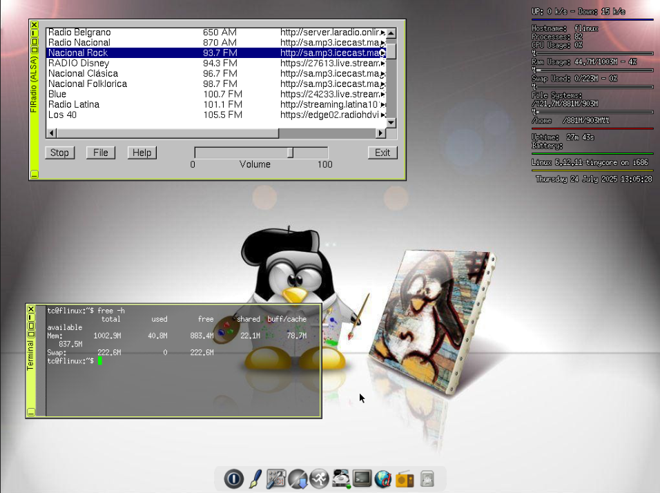

FLinux is a Linux distribution entirely built in FLTK 1.3, hence the name (FL+inux). Its FLTK programs begin with its window manager: FLWM (1.20), web browser Dillo, FlRadio, fluff (file manager), and even an image viewer (flpicsee).
It also includes ALSA as a preconfigured sound service, Xvesa as a graphical server, wbar, torsmo, and MP3 codecs (mpg123). As text editors it only includes "editor" (in FLTK) and vi (CLI). Terminal emulators: aterm and xterm.
This distribution is minimalist and modern, based on Tiny Core Linux 16.1. It uses kernel Linux 6.12 and glibc 2.40. It is for x86 (32-bit) only.
Flinux is a very lightweight mini distribution and can be started without swap on 96MB of RAM (installed).
You can also type "xpkg" in the terminal to install extra extensions not present in the Tiny Core repository.
There are two versions available for download; the difference is that one includes WIFI support and the other does not. The WIFI version is heavier and consumes more memory due to the service, program, and drivers it loads.
DOWNLOADS
| Key Combination | Action |
| ALT + Tab | Open menu, even ver windows |
| ALT + F1 | Minimize selected window |
| ALT + Del | Close active window |
| Ctrl + ALT + Arrows | Move window |
| Ctrl + F? | New desktop |
| Ctrl + ALT + T | PageUp | Increase window upwards |
| Ctrl + ALT + S | PageDown | Decrease window downwards |
| Ctrl + ALT + H | Maximize window horizontally |
| Ctrl + ALT + V | Maximize window vertically |
| Ctrl + ALT + M | Fullscreen window |
| Ctrl + ALT + + | Grow window diagonally |
| Ctrl + ALT + - | Shrink window diagonally |
| Ctrl + ALT + Del | Exit to prompt |